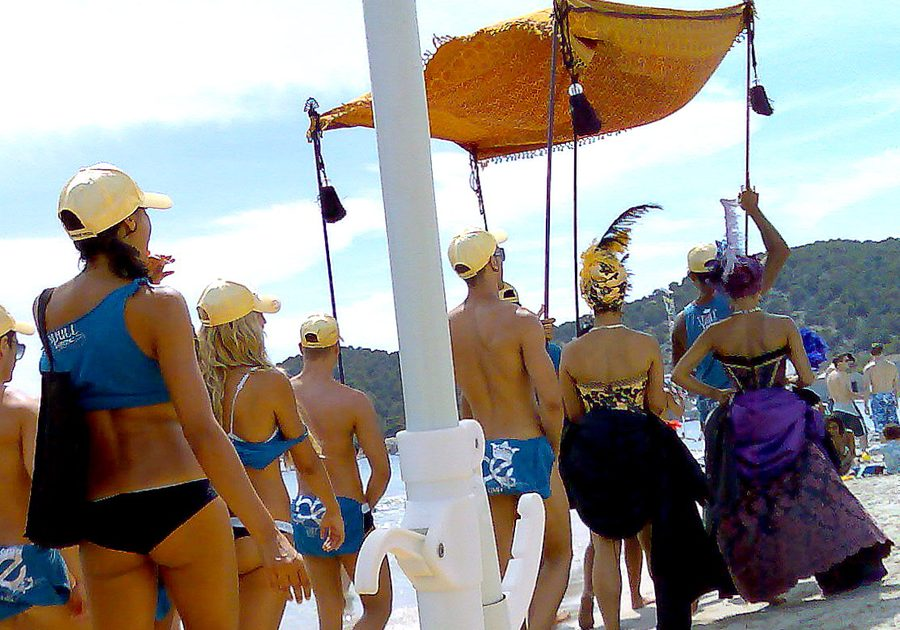

Space Ibiza NYD's free ticket furor



There must have been something in the air over New Years, with events marred by freak electrical storms, overbearing police, and in the case of the much anticipated debut of the Space Ibiza brand in Sydney, punter fury after a questionable ‘free ticket’ offer. Organised through a third-party promotional website, the deal wasn’t honoured when hopeful punters arrived at the venue on Friday January 1st.
The giveaway promotion first appeared in late December on publicitymonster.com.au, a website that bills itself as a “social networking specialist” who are able to target “directly at Generation-Y. We speak to them in there [sic] own language, on there [sic] own platforms.” Publicity Monster’s offer was almost too good to be true; “Ticket Giveaway! 500 Tickets to SPACE IBIZA 20th ANNIVERSARY New Years Day. The first 500 to register will get a complimentary ticket.”
By December 30th the promotion seemed to be traveling well, although with an inconsistency in the exact number of ‘free’ tickets on offer. “600 FREE tickets worth $72,000 were released yesterday with only a very few left… This is a legitimate offer, given to our friends and members by the promoters of Space Ibiza New Years Day.” However, by the time Space Ibiza rolled around on NYD the wheels had well and truly fallen off. Registered punters arrived at the event to find there were in fact no free tickets at all, and Publicity Monster jumped into the fray to offer an update on the website.
“We have been receiving reports that the promoters of the event are not honouring the ‘FREE’ guestlist they have asked us to organise and are requesting payment on arrival. We have tried to contact the promoters involved and they have not responded to any of our calls, emails or sms.” Publicity Monster then proceeded to wash their hands of the fracas. “This event has nothing to do with Publicity Monster or its staff, we were merely hired to send out a message on behalf of the Space Ibiza event.” In a final attempt at distancing themselves from the fiasco, Publicity Monster posted the promoter’s email and mobile numbers. Yikes.
Debate continues to rage on the whether or not the giveaway was legitimate, as there’s been some indication it was the result of a miscommunication between members on the promotional team, and there’s also been reports that those who missed out on free tickets were still let in at a sharply reduced price. Either way one thing is certain, there were a whole lot of partygoers left furious, and much of it has been vented on the ITM forums.
The promoters of Space Ibiza NYD declined inthemix’s request for a statement at the time of publishing this story.